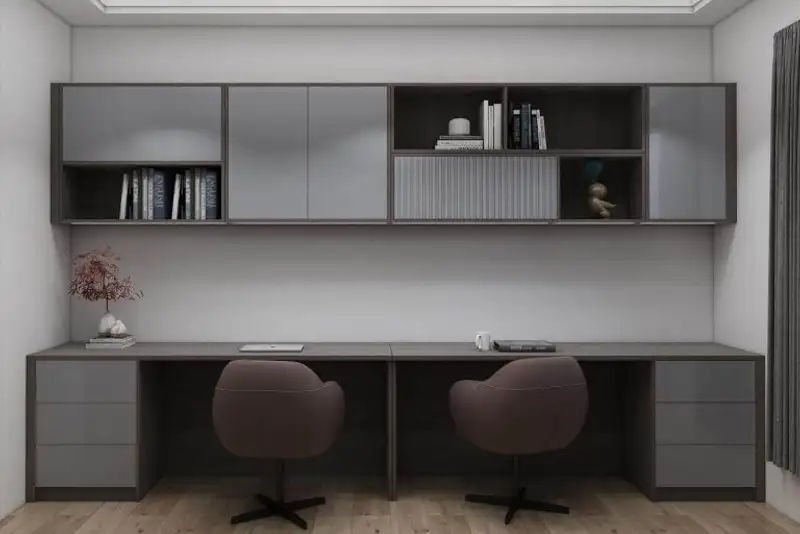

Daftar Isi
Lemari gantung melayang adalah unit penyimpanan yang dipasang menempel dinding tanpa kaki penyangga, menggunakan jangkar dinabolt sebagai penahan beban utama, sehingga cocok untuk ruang kerja minimalis yang terbatas.
- Lemari gantung melayang mengandalkan jangkar dinabolt, bukan kaki lantai, sebagai titik tumpu utama.
- Konsep ini populer untuk ruang kerja minimalis karena menghemat area lantai.
- Kekuatan dinding dan jenis material dinding menentukan kelayakan pemasangan.
- Pemilihan bracket besi yang sesuai memengaruhi daya tahan lemari dalam jangka panjang.
- Penataan lemari gantung sebaiknya mempertimbangkan tinggi jangkauan dan tata letak meja kerja.
Apa Itu Lemari Gantung Melayang?
Lemari gantung melayang adalah kabinet penyimpanan yang seluruh bebannya bertumpu pada dinding melalui sistem jangkar, tanpa kaki penyangga yang menyentuh lantai. Desain ini memberi kesan ruang yang lebih lapang karena area di bawah lemari tetap terlihat kosong.
Konsep ini banyak diminati untuk ruang kerja berukuran kecil di rumah, apartemen, maupun sudut kantor rumahan. Selain menghemat ruang lantai, tampilan lemari yang seolah melayang juga memberi kesan modern dan rapi pada ruangan.
Pada praktiknya, lemari gantung melayang biasanya terbuat dari material multiplek, MDF, atau particle board dengan finishing HPL atau cat duco, tergantung anggaran dan preferensi estetika pemilik ruang.
Mengapa Jangkar Dinabolt Penting dalam Pemasangannya?
Jangkar dinabolt berfungsi sebagai titik penahan utama yang mengunci lemari ke struktur dinding, sehingga seluruh beban lemari dan isinya tersalur secara aman ke dinding.
Dinabolt adalah jenis pengencang mekanis yang bekerja dengan cara mengembang di dalam lubang bor saat mur dikencangkan, sehingga cengkeramannya kuat pada dinding beton atau bata padat. Untuk lemari gantung yang menahan beban cukup berat, seperti buku atau arsip, jangkar ini umumnya lebih disarankan dibandingkan fischer plastik biasa.
Jumlah dan posisi titik dinabolt biasanya disesuaikan dengan lebar dan tinggi unit lemari. Semakin lebar dan berat lemari, semakin banyak titik jangkar yang diperlukan agar distribusi beban merata.
Apakah Semua Jenis Dinding Cocok untuk Lemari Gantung Melayang?
Tidak semua jenis dinding cocok, karena kekuatan tumpuan dinabolt sangat bergantung pada kepadatan material dinding tempat lemari dipasang.
Dinding bata merah dan beton cor umumnya dapat menahan beban lemari gantung dengan baik apabila jangkar dipasang pada posisi yang tepat. Sebaliknya, dinding partisi gypsum atau bata ringan berongga memerlukan penanganan khusus, seperti penambahan rangka hollow di baliknya, agar mampu menahan beban tanpa retak atau ambruk.
Sebelum pemasangan, pengukuran kepadatan dinding dan pengecekan posisi rangka struktural sangat dianjurkan agar hasil akhir aman digunakan dalam jangka panjang.
Bagaimana Cara Menata Lemari Gantung Melayang di Ruang Kerja Minimalis?
Penataan lemari gantung melayang sebaiknya disesuaikan dengan tinggi jangkauan tangan dan alur kerja di meja, agar fungsi penyimpanan tetap efisien tanpa mengganggu aktivitas.
Beberapa pertimbangan penataan yang umum digunakan:
- Memasang lemari pada ketinggian yang masih nyaman dijangkau tanpa harus berdiri di atas kursi.
- Menyisakan jarak pandang bebas di atas meja kerja agar ruangan tidak terasa sesak.
- Mengombinasikan lemari gantung dengan rak terbuka untuk kesan visual yang lebih ringan.
- Memilih warna netral seperti putih, abu-abu, atau kayu natural agar selaras dengan konsep minimalis.
Penataan yang tepat membantu ruang kerja tetap terasa lapang meskipun kebutuhan penyimpanan tetap terpenuhi.
Apa Saja Kesalahan Umum saat Memasang Lemari Gantung Melayang?
Kesalahan paling umum adalah mengabaikan kondisi dinding dan memasang jangkar tanpa memperhitungkan estimasi beban isi lemari, yang berisiko menyebabkan lemari lepas dari dinding.
Beberapa kesalahan lain yang sering terjadi meliputi penggunaan jumlah titik dinabolt yang terlalu sedikit, jarak antar titik yang tidak merata, serta pemasangan pada dinding yang belum diperiksa kepadatannya. Kesalahan ini dapat diminimalkan dengan melibatkan tukang atau kontraktor berpengalaman yang memahami karakteristik dinding dan beban lemari.